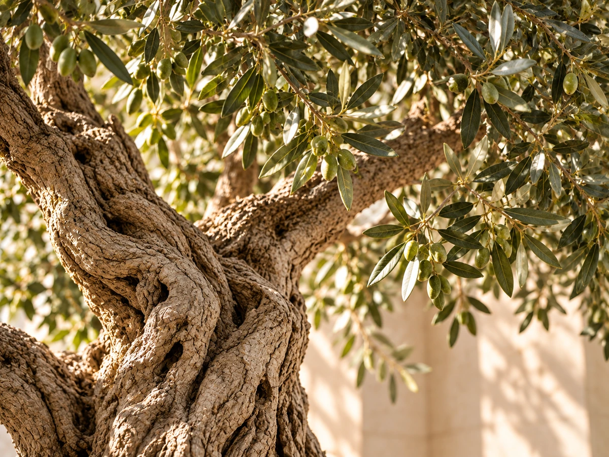
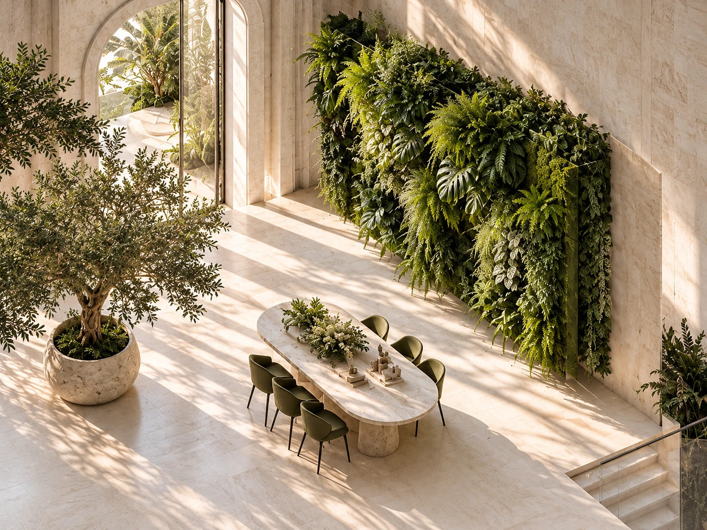
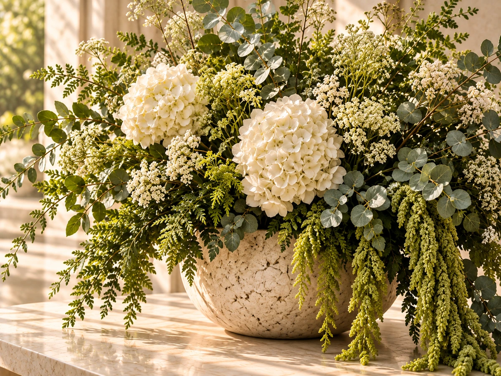
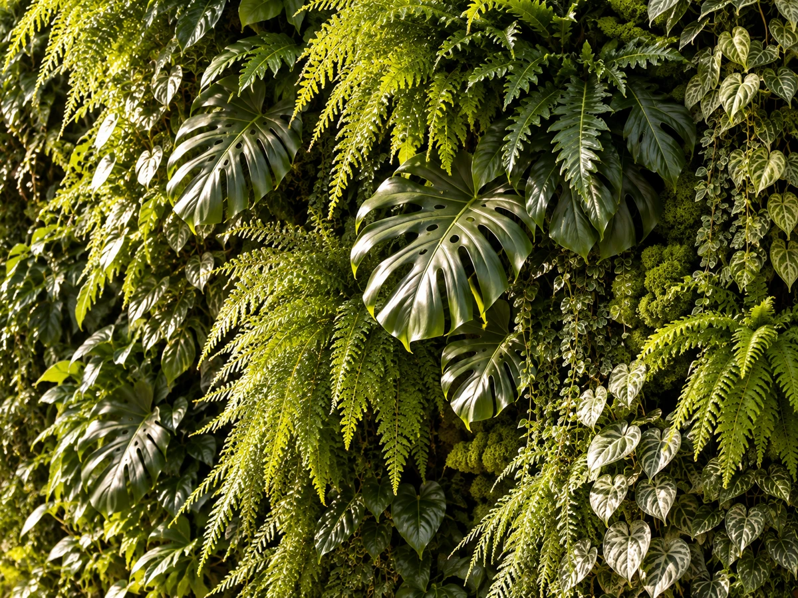
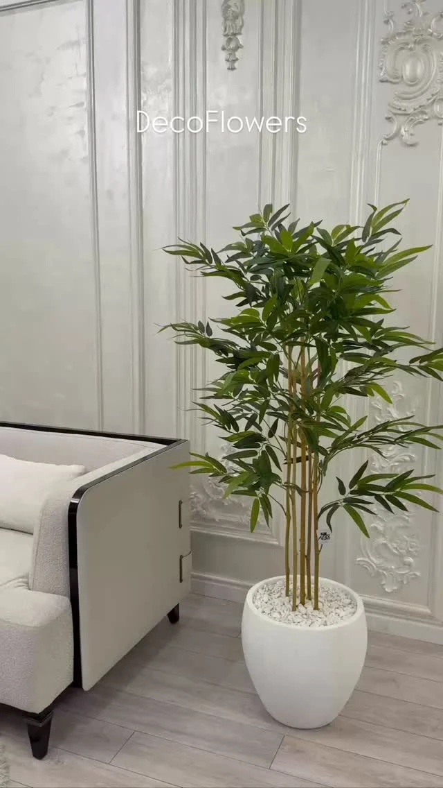
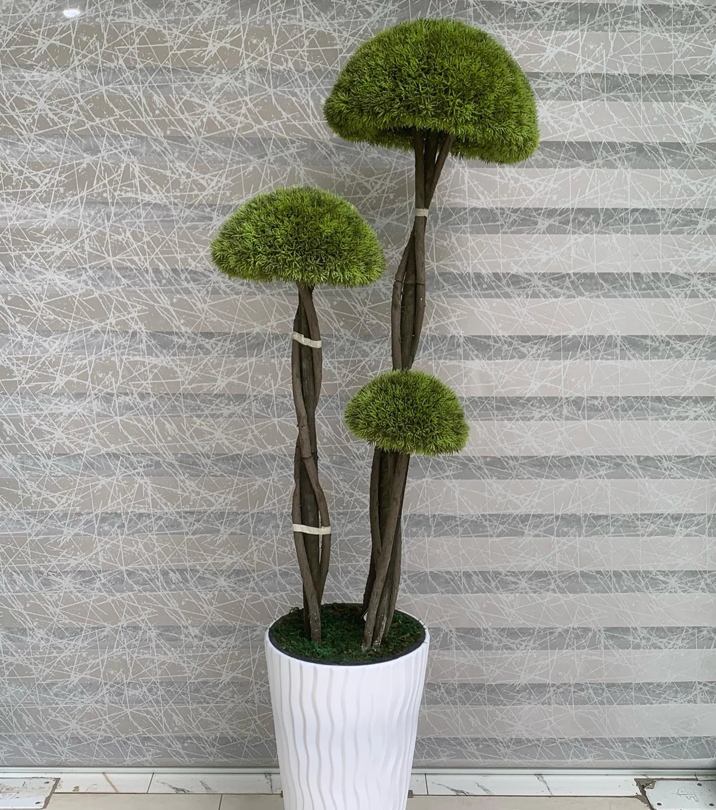
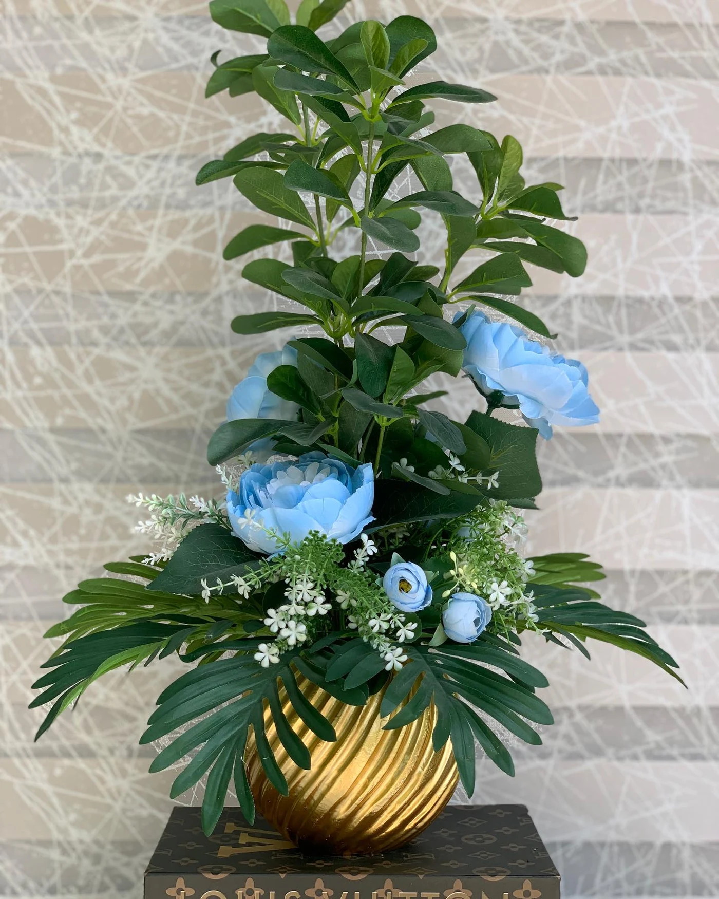
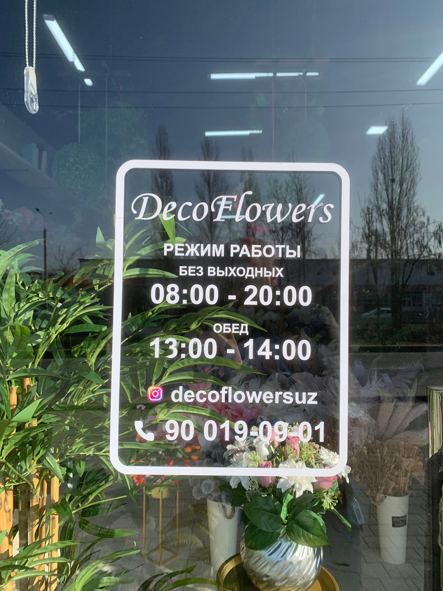

Самостоятельный акцент. Искусственные деревья для дома, офиса и общественных пространств.

Готовые композиции, декоративные деревья и вертикальная зелень. Выберите направление, с которого начнётся ваш интерьер.

Самостоятельный акцент. Искусственные деревья для дома, офиса и общественных пространств.

Цветы, зелень и сосуд как единое целое. Готовые композиции в вазах и кашпо разных цветов и дизайна.

Зелень в масштабе архитектуры. Декорация вертикальных фитостен и оформление интерьера под ключ.
Ассортимент DecoFlowers соединяет искусственную флористику, декоративную зелень и предметы для интерьера.

01 / Объект в интерьере
Искусственные цветы и растения в вазах и кашпо. Готовые сочетания для стола, консоли или отдельного уголка интерьера.
Обсудить композицию
Декоративные деревья для дома, офиса, магазина и клиники. Нужный размер и актуальное наличие можно уточнить в шоуруме.
Подобрать дерево
Зелень для интерьера, офисов, кафе и ресторанов. От отдельного растения до сочетания нескольких форм.
Обсудить зелень
Сосуды разных цветов и дизайнов — самостоятельные предметы и основа для готовых композиций.
Посмотреть варианты в шоуруме
Декорация вертикальных фитостен и озеленение интерьера под ключ. Расскажите о пространстве, чтобы обсудить решение с командой.
Обсудить фитостену
В шоуруме представлены книги, вазы и другие предметы для оформления интерьера. Ассортимент и наличие уточняются у DecoFlowers.
Уточнить ассортиментДля частных и общественных пространств. Начните с того, как вы используете свой интерьер и какое настроение хотите создать.
Дерево рядом с креслом, композиция на столе, зелень у окна. Рассмотрите отдельный предмет или оформление всего пространства.
Декоративные растения для рабочих пространств и зон ожидания. Обсудите с командой масштаб и характер вашего интерьера.
Искусственная зелень для гостевых зон. От композиции на столе до вертикального зелёного акцента.
Интерьеры, оформление входных зон и авторские композиции. Откройте лист атласа, чтобы рассмотреть фотографию целиком.
Бамбук в белом кашпо. Вертикальный акцент рядом с мягкой мебелью и светлыми стенами.
Обсудить похожий акцентОформление входа в детский сад декоративной зеленью. Растения подчёркивают силуэт арки.
Обсудить похожий акцент
Газон и декоративные деревья для открытого пространства — пример из коллекции DecoFlowers.
Обсудить похожий акцентАвторская композиция ручной работы: белые цветы и золотистое кашпо.
Обсудить похожий акцент
Высокая цветочная форма в золотистом кашпо рядом с креслом — акцент в масштабе комнаты.
Обсудить похожий акцентЦветочная композиция, ваза и декоративная книга. Несколько предметов создают единый акцент.
Обсудить похожий акцентЦветы, растения, вазы, книги и интерьерные аксессуары. Рассмотрите формы и сочетания рядом — так проще выбрать своё.

Для личного интерьера, проекта дизайнера или заказа для бизнеса. Состав заказа, наличие и условия обсуждаются с шоурумом.
Доставка по всему Узбекистану. Команда поможет согласовать стоимость, сроки и условия для вашего города и выбранных предметов.
Обсудить заказСвяжитесь с шоурумом по телефону или через Instagram. Каталог, актуальное наличие и цены необходимо подтвердить у DecoFlowers.
Расскажите о типе пространства, городе и желаемом направлении: дерево, готовая композиция или фитостена. Можно подготовить короткое описание ниже.
Да, DecoFlowers работает оптом и в розницу. Условия конкретного заказа согласуются с шоурумом.
Да. В шоуруме можно подобрать готовое сочетание цветов и вазы или кашпо. Расскажите о цвете, форме и масштабе вашего пространства — команда поможет выбрать подходящий вариант.
Подготовьте описание для разговора с DecoFlowers. Его можно скопировать или скачать и передать команде по удобному каналу.
+998 90 019 09 01Instagram · @decoflowersuz